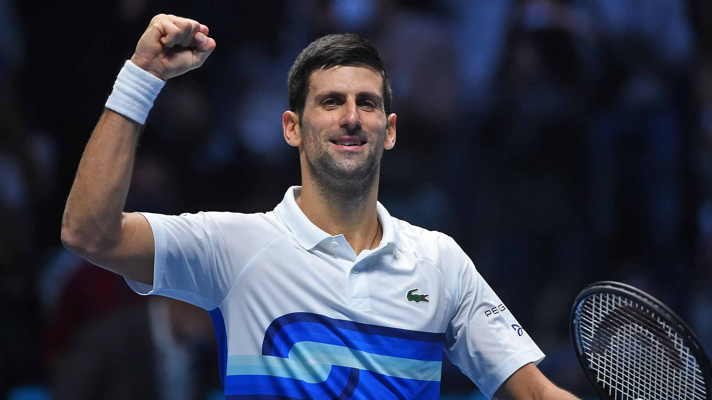

Novak Ðokovic srpski je profesionalni teniser.
Na prvom mestu ATP liste je proveo 350 nedelja što je najduži period u istoriji otvorene ere. Mnogi teniski kriticari, bivši igraci i saigraci smatraju Ðokovica jednim od najboljih tenisera u istoriji
Jedan je od petorice tenisera u Open eri koji su osvojili grend slem karijere.
Profesionalno igra od 2003. godine. U dosadašnjoj karijeri je osvojio 20 titula na grend slem turnirima: devet puta Otvoreno prvenstvo Australije.
Osvajanjem Rolan Garosa 2016. postao je prvi teniser, nakon Roda Lejvera 1969, sa pobedama na sva cetiri grend slem turnira u nizu i jedini koji je to ostvario na tri razlicite podloge.
Jedini je teniser u Open eri koji je osvojio svaki grend slem turnir minimum dva puta.
Rekorder je po osvojenim trofejima na Otvorenom prvenstvu Australije.
Drži rekord sa sedam završenih godina kao prvi teniser sveta i po zaradi od turnira u muškom singlu.